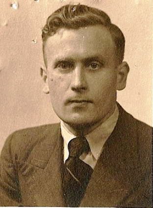

> nieuwsbrief >
2009 - nr 4
Inhoud
Zowel de
herdenkingsplechtigheid aan het Bourgoensche Cruyse (in de voormiddag)
als de
jaarmis in de kapel van het Slot van Male (in de namiddag) zullen in
2010
doorgaan op zaterdag 22 mei 2010.
Het bezoek aan het dubbelgraf
van
Joris van Severen en Jan Rijckoort te Abbeville is gepland op zondag
23 mei.
In 2010 zal het precies 70 jaar geleden zijn dat het drama van
Abbeville zich
afspeelde.
Oproep
Graag had ik alle mogelijke documentatie i.v.m. Cecilia de Langhe (1912-2001) ontvangen, gehuwd met Odon Spitaels; dat met het oog op een biografisch artikel over haar. Geboren in Gits en overleden in Vlezenbeek. Woonde lange tijd in Belgisch-Congo en was een tijdlang voorzitster van de Verdinaso-Vrouwen (Verdivro). Alle hulp is welkom .
Pieter
"Joris
van Severen: een biografisch portret"
Bij de
Nederlandse uitgeverij Aspekt verschijnt rond de jaarwisseling een
biografie
van Joris van Severen van de hand van onze medewerker Pieter Jan
Verstraete.
Via onze volgende Nieuwsbrief krijgen
onze leden de mogelijkheid aangeboden om deze uitgave bovenop ons
jaarboek te
bestellen voor een gunstprijs die aanzienlijk beneden de
boekhandelprijs ligt.
14e Historische
beurs Vlaamse Beweging 18 oktober
(9-16 uur), zaal Nilania, Kesselsestw. 52; 2560 Nijlen.
Ons
Studiecentrum zal aldaar dit keer verstek moeten geven. We raden een
bezoek aan
de beurs niettemin van harte aan!
Een nieuwe
politieke staat binnen de Europese Unie
De
Benelux als politieke unie - Het civilisme
als politieke filosofie
Dit boek is opgebouwd vanuit twee grote politieke
invalshoeken. In de
eerste plaats de ontwikkeling van de politieke filosofie van het
civilisme, een
nieuw uitgevonden begrip, een zogenaamd neologisme, afgeleid van
civilisatie.
Heel kort door de bocht gesteld: de kerngedachte is dat iedere mens de
roeping
heeft een bijdrage te leveren aan onze civilisatie, materieel dan wel
immaterieel.
Als uitgewerkte basis voor deze politieke filosofie
dienen een tiental
stellingen, door
Vervolgens worden in het boek, op basis van deze
uitgangspunten op
diverse beleidsterreinen ook beleidsvoorstellen ontwikkeld. Het voert
te ver
hier de tien uitgangspunten integraal te poneren. Volstaan moet worden
met de
vaststelling, dat deze tot onderwerp hebben onder meer, de burger, als
drager
niet enkel van rechten maar ook van plichten, ten opzichte van de
diverse
kringen in de samenleving, de structuur van de staat volgens de
beginselen van
gespreide verantwoordelijkheid oftewel de subsidiariteit, de
gezagsuitoefening
binnen de samenleving en de bevordering van een meritocratie hetgeen
wil zeggen
dat het gezag door de terzake bekwaamsten wordt uitgeoefend.
Zeker ook houden deze uitgangspunten zich bezig met het
normatieve in de
samenleving, dus de waarden en als tiende uitgangspunt last but
not least
wordt aandacht gevraagd voor het milieu. In zijn aanloop naar de
formulering
van de tien uitgangspunten bepleit
Zoals gezegd, de auteur daalt in zijn boek af van het
rijk van de hogere
principes naar het beleidsniveau en komt hier met concrete voorstellen
voor de
te voeren politiek. Dit gebeurt onder meer met betrekking tot de
criminaliteit,
zowel in preventieve als repressieve zin. Een brandend maatschappelijk
probleem
dat zowel in kwalitatieve zin dus in ernst als in kwantitatieve zin
dus
in omvang finaal uit de klauwen is gelopen. De ontwikkelde visie
benadrukt
zowel het belang van opvoeding en vorming als preventie te dezen als de
generaal preventieve werking van een afdoende sanctionering. In beide
opzichten
schiet men thans kennelijk te kort!
Het grote belang van onderwijs en het leveren van
maatschappelijk
relevante prestaties wordt beklemtoond vanuit de gedachte van de drie
Ks:
Kunnen (capaciteiten), Kennen (know-how) en Karakter (integriteit en
gemotiveerdheid). Ook wordt de strijd aangebonden met het verwerpelijke
pesten op school!
Ten aanzien van het immigratievraagstuk wordt een
eresaluut gebracht aan
de emigranten die het hebben weten te bolwerken en tevens wordt
aangetoond hoe
onverantwoordelijk want maatschappelijk nefast het zo liberale
instroombeleid van de afgelopen decennia heeft uitgewerkt. Van regeren
is
vooruitzien, gourverner cest prévoir, gesproken!
Vernieuwende voorstellen worden ook gedaan met betrekking
tot de
hervorming van ons politiek stelsel, om onze democratie beter te doen
werken.
Naast de representatieve democratie worden ook meer
vormen van directe
democratie geïntroduceerd directe verkiezing gezagdragers, referenda
teneinde de particratie terug te dringen ten gunste van de
meritocratie. Ten aanzien van het
sociaaleconomische beleid worden ideeën uitgewerkt onder andere voor de
radicale terugdringing van de belasting op arbeid en de introductie van
een
leefloon.
Ook de prangende internationale milieu problematiek
krijgt ten volle de
aan-dacht die ze verdient. Een enkel citaat: zeeën mogen geen natte
woestijnen
worden! Een andere uitspraak: Dieren, voor zover van ons afhankelijk,
moeten
wij in staat stellen hun dier zijn, krachtens hun natuur te beleven.
Dat
verdraagt zich dus niet met de omstandigheden waaronder dieren in de
bio-industrie veelal moeten leven. Geen levend wezen mag enkel bezien
worden
uit het oogpunt van winstmaximalisatie. Dat is een evolutie van
innerlijke
beschaving. Het zijn maar enkele voorbeelden.
Politiek-filosofisch wijzen de auteurs op de sterke
verwantschap tussen
de Christen-Democratie en hun civilistische ideeën. Het realiseren van
deze
laatste kan logischerwijze het best gebeuren binnen een juiste
Christen-Democratie.
In de eerste richtlijn wordt onder andere ook gepleit
voor het
expliciet maken en actualiseren van de maatschappelijke waarden en
normen,
welke in het evangelie besloten liggen. Zelfs voor niet-christenen in
elk geval
toch een gezaghebbende bron van onze beschaving.
Zoals in het begin gezegd: naast de
maatschappij-filosofische invalshoek
van het civilisme, is er nog een ander thema in het boek. Dat betreft
de
voorgestane revitalisering van de Benelux tot een ever closer Union
met als
einddoel een (con)federaal staatsmodel, omvattende de huidige drie
landen. En
dit, vanwege de verwachtbare meerwaarde hiervan op tal van terreinen.
Zodoende
wordt ook een wenkend perspectief geopend om uit de verlammende
existentiële
Belgische staatscrisis te geraken en een uitweg gevonden uit de
permanente en
destructieve communautaire polarisatie binnen België. Niet voor niets
hebben in
dit boek de Nederlander
Immers het voorwoord en het slot zijn van de Vlaming uit
Izegem Luc
Synaeve en het tussenliggend gedeelte van de afwisselend in Brugge en
Den Haag
wonende Olaf van Boetzelaer. We beleven thans een opstoot van Vlaams
nationalisme.
De gerechtvaardigde aspiraties van de Vlamingen naar meer autonomie
kunnen heel
wel hun verwezenlijking vinden in een Benelux-staat, die ook veel
meer
gewicht binnen de Europese Unie zal hebben dan het kleine Vlaanderen
afzonderlijk. Vlaams-nationalisten zouden in plaats van zich te
focussen op
Kleinstaterei eens de denkpiste kunnen gaan bewandelen van zich te
situeren
binnen een verruimingsoperatie: the magic of thinking big, met
Brussel als de
(tweetalige) hoofdstad van de Benelux-staat, de herrezen Nederlanden.
Dat biedt ook voor de Franstalige Belgen aanlokkelijke
perspectieven,
beter dan een ondergeschoven kind van Frankrijk te worden! Met het
bovenstaande
hopen de auteurs aannemelijk te hebben gemaakt dat dit boek een meer
dan
zinvolle bijdrage kan leveren aan het politieke discours.
_______________
N.a.v. Een
nieuwe politieke staat binnen de Europese Unie, Uitgeverij
Groeninghe, ISBN 978-9077723-83-8.
Prijs (verzendkosten inbegrepen) 15 , via overschrijving op rekening
465-0226721-64 t.n.v. Stichting Joris van Severen, Meensesteenweg 191,
8870
Izegem.
Hugo Schiltz over Joris van Severen en
het Verdinaso
Eind mei verscheen Hugos heilige
vuur (Meulenhoff /Man-teau, 2009, 509 blz, 39,95 euro), het eerste
deel van
de biografie van Hugo Schiltz (1927-2006), Vlaams-nationaal politicus
en één
van de belangrijkste figuren uit de naoorlogse politieke ge-schiedenis
van
België. Het lijvi-ge werk gaat dieper in op de jonge jaren van de
Antwerpe-naar.
Het bestrijkt de periode tussen zijn geboorte in 1927 en zijn eerste
stappen in
de politiek in 1954 (toen nog bij de CVP; Schiltz stapte pas halverwege
jaren
60 naar de Volksunie over).
Biograaf Paul Huybrechts baseert zich voor zijn boek in
belangrijke mate
op de uitgebreide dagboeknotities die Schiltz naliet. Ook het vele
poëziewerk
dat de jonge flamingant publiceerde behoort tot het door de auteur
gebruikte
materiaal. Aangezien Schiltz zelf uit een overtuigd-flamingantische
familie van
de klassieke katholieke kleinburgerij stamde, staan de dagboeken vol
met
verwijzingen naar figuren uit de Vlaamse Beweging. Ook het Verdinaso en
Joris
van Severen komen aan bod. Daaruit blijkt dat Schiltz, die nochtans
altijd een
duidelijke Dietse reflex heeft gehad, niet hoog opliep met de
beweging en haar
leider. Niettemin was hij een tijdlang medewerker van het
neo-Dinaso-blad Vive le Gueux.
Hugo Schiltz, die zelf als lid van de NSJV
(Nationaal-socialistische
Jeugd Vlaanderen) in 1944 kortstondig in hechtenis werd genomen
worstelt
jarenlang met de houding die hij moet innemen ten opzichte van de
autoritaire
stromingen binnen de Vlaamse en Groot- en Heel-Nederlandse Beweging.
Ook de rol
van collaboratie en verzet doet de jongeman, die na
Het siert de niet-historicus Paul Huybrechts (de man is
vooral in
financiële kringen actief, is een oud 68er en ex-journalist van De Morgen en De Financieel-Economisch Tijd)
dat hij doorheen de biografie alles
in zijn tijdskader plaatst. Zo laat hij bijvoorbeeld niet na te
benadrukken dat
er in de periode kort na WO.II amper aandacht was voor de
jodenvervolging door
het naziregime. Ook stelde hij naar aanleiding van het verschijnen van
de
biografie in een interview: wat zou er van u geworden zijn als u in
Dinaso steekt
weer het hoofd op,
steenezels
Het is hier uiteraard niet de bedoeling om de
Schiltz-biografie hier
uitvoerig te bespreken maar het loont wel de moeite om dieper in te
gaan op wat
de man denkt over het Verdinaso en Joris van Severen. In zijn jonge
jaren werd
ten huize Schiltz uiteraard vaak over politiek gepraat. De familie had
duidelijke VNV-sympathieën maar er werd eveneens over de rol van de
Fronters,
minimalisten en Dinasos gediscussieerd. Politiek en wereldproblemen
waren
dagelijkse kost, zo stelt Huybrechts. In 1992 denkt Schiltz in zijn
tijdschrift Vlaanderen Morgen nog
eens terug aan die periode en heeft hij het over zijn familie: Al
waren zij
allemaal echt Vlaamsgezind, de helft hield het bij de katholieken, en
de andere
helft bij de Vlaams-nationalisten, behalve één enkele die met kepi en
botten
rondliep voor Joris van Severen.
Schiltz was als jonge flamingant doordrongen van de
Vlaams-romantische
mystiek rond figuren als Dosfel, Tollenaere, Borms en in mindere mate
Verschaeve. Na de oorlog waren repressieslachtoffers als Romsée helden.
Van
Severen behoort niet tot het pantheon van de familie Schiltz. "Het
heilige
vuur van Van Severen heeft Hugo thuis niet meegekregen," stelt
Huybrechts
(blz 307). De auteur gaat overigens even kort door de bocht door te
stellen dat
Joris van Severen met zijn Verdinaso een onversneden fascist wordt.
Historisch onderzoek heeft aangetoond dat de waarheid op zijn minst
genuanceerder is.
De jonge Schiltz is niet gefascineerd door Van Severen
maar de
denkbeelden van de Verdinaso-leider werken niettemin door in de
geschriften van
de politicus in spe. In een manuscript uit 1946 heeft hij het over de
nood om
een Nederlandse gentleman te zijn. Hij ziet de Walen niet als
Nederlanders
maar het valt niet te ontkennen dat de eeuwenlange samenleving van
Nederlanders en Walen (waarbij vroeger de eersten de toon aangaven) een
gemeenschappelijke economie en handelsbelangen een zeker
samenhorigheidsgevoel
verwekt hebben, hoe wankel en betwistbaar ook. Verder stelt hij over
de Walen:
Als ze nog een greintje nuchter verstand bezitten, zullen zijn
wellicht als
bondsstaat een toevlucht vinden in het Nederlandse Rijk.
Net als vele jonge Vlaams-nationalisten is Schiltz kort
na WO.II een
zoekende en vraagt hij zich af of de toekomst in Vlaanderen, België,
Groot- of
Heel-Nederland ligt, in een democratie of in een autoritair regime.
Wij
aanvaarden België, maar leggen er ons niet bij neer stelt hij in
Maar Van Severen kan Schiltz dus niet bekoren en hij
begrijpt niet dat
vrienden naar de Leider teruggrijpen: Dinaso steekt weer het hoofd
op,
steenezels, iedereen meent dat zijn oplossing de enige mogelijke is.
Er wordt
veel gepraat en gebulderd, maar daden?
(04-03-1946).
Anderzijds is hij vol lof wanneer het tijdschrift Branding verschijnt en als antwoord op de stuurloosheid
van vele
jongere Vlamingen put uit het gedachtengoed van Van Severen. Drijvende
kracht
achter het blad is de latere CVP-minister Frans van Mechelen. Branding is net verschenen. Een moedig
opzet. Zal het slagen? Vlaanderen dreigt zich zo te verbrokkelen, dat
men soms
zou wanhopen. En toch? Wij bezitten nog een jeugd die iets durft en
iets doet
(05-03-1947).
Het noodlottig
pretorianendom
In november 1947 komt rechtenstudent Schiltz in contact
met Vive le Gueux. Het blad werd dat
voorjaar opgericht door Rudolf Westerduyn (Rudolf van Moerkerke), Manu
Ruys,
Staf Vermeire en Karel Vanderhaeghen (Jan Olsen). In Vive
le Gueux van februari 1949 schrijft Schiltz volgens Huybrechts
één van zijn belangrijkste bijdragen als jong flamingant. Het gaat om
het
artikel Van contrast naar contact
waarin hij onder het pseudoniem P. Verhulst zich vragen stelt bij de
rol van de
Vlaamse leiders tijdens WO.II. Volgens Huybrechts werkte Schiltz bijna
twee
jaar aan de tekst. Wij citeren biograaf Huybrechts hier uitgebreid:
Met het
artikel Van contrast naar contact
breekt Hugo uit zijn eigen gevangenis. Hij loopt niet over naar het
democratische kamp, maar bezint zich over de tegenstelling tussen wit
en zwart,
tussen fascisme en democratie. Hugos politieke paradigma verschuift.
Als
overwonnene bekent hij dat zijn politieke kompanen zich tijdens de
oorlog in
een noodlottig pretorianendom van het volk verwijderd hebben, dat de
kruistocht
tegen het bolsjewisme smadelijk geprostitueerd werd, dat zij blind zich
en
naïef in de arm van een trouweloze vriend hebben geworpen.
Het is paradoxaal dat Schiltz deze voor hemzelf
existentieel belangrijke
bijdrage schrijft in een tijdschrift waar hij al snel afstand van zal
nemen.
Schiltz heeft het in 1948 lastig met een speciaal Vive le
Gueux-nummer dat aan van Severen is gewijd.
Volgende passage in zijn dagboek verwijst daarnaar: Het
laatste nummer
van Vive le Gueux is aan Joris van
Severen toegewijd. Dat voordurend op één lijn stellen van Artevelde, de
Zwijger
en Van Severen stuit mij wat tegen de borst. Maar waar komt die
hardnekkigheid
vandaan, waarmee de getrouwen aan hun idool vasthouden. (19.05.1948).
Maar een dag later schrijft hij dan weer :Mis voor Joris
van Severen en
voor allen die stierven als strijdende Vlamingen. Om 7u. Ongeveer 40
man
aanwezig. Noem ik een succes. Gezien de studentenluiheid.
Schiltz vindt blijkbaar dat de aanhangers van Joris van
Severen weinig
realiteitszin hebben. Vormt zich hier al de pragmatische, nuchtere
realpolitiker? Als universiteitsstudent die contacten houdt met zijn
vroegere
school, het Xaveriuscollege in Borgerhout, schrijft hij in de herfst
van 1948:
Twee mannen van poësis zijn hier geweest om raad te vragen over de
methode in
de klas te volgen. (
) Een ervan komt uit een Dinasofamilie. (
) Even
gefascineerd door de figuur van Joris van Severen, even abstract en ver
van de
concrete Nederlandse werkelijkheid.
Wel ergert Schiltz zich op een bepaald moment aan het
gebruik van de
icoon Joris van Severen in de verkiezingscampagnes, zoals door de
Vlaamse
Concentratie in 1949: "Men liet de schim van Van Severen beter rusten,
in
plaats van ze te verkwanselen in een verkiezingscampagne." Hij noemt de
naam van onder andere Paul Persyn (lid van de Verdinasoleiding die na
de
opslorping van de beweging in het VNV in het verzet terechtkwam) als
één van de
vele figuren die actief in CVP of Vlaamse Concentratie de naam Van
Severen of
hun voormalig lidmaatschap van de beweging gebruiken.
In 1950 refereert Schiltz in een toespraak voor Waalse
studenten nog
eens naar Van Severen, maar dan heeft hij het niet over de
Verdinaso-leider,
wel over de frontsoldaat uit WO.I: De Vlamingen worden vernederd en
wanneer de
Frontbeweging protesteert, worden de voormannen zoals Joris van
Severen -
gedegradeerd of verbannen naar strafkampen.
Uit de biografie blijkt dat Hugo Schiltz zich nooit echt
aangetrokken
gevoeld heeft tot Joris van Severen. Enerzijds omdat er in zijn
Vlaams-nationale opvoeding nooit veel aandacht is geweest voor het
personage,
anderzijds omdat de jonge Schiltz langzaam maar zeker afscheid neemt
van wat in
zijn ogen iconen uit het verleden zijn.
Dertiende jaarboek Joris van Severen - Van Oranje tot Servaes
Brederode
Zoals in de vorige twaalf jaarboeken, gewijd aan Joris van Severen, met als ondertitel: Zijn persoon, zijn gedachten, zijn invloed, zijn werk, biedt het onlangs verschenen dertiende deel weer een veelzijdig en diepgaand beeld van de leider van het Verdinaso. Bij de negen bijdragen treffen we ook nieuwe en weinig bekende feiten en figuren in verband met het Verdinaso aan. Zo was de beroemde expressionistische kunstschilder Albert Servaes, lid van het Verdinaso, maar evolueerde hij nadien naar de collaboratie, evenals zijn zoon Jan.
Een direct en
tijdsgebonden
document, is het vervolg van Van Severens oorlogsdagboek, Die
vervloekte oorlog, dat in Jaarboek 9 (2005) verscheen en de
periode 13 november - 31 december 1918 behelst. Het is verbazend hoe
hij, na de
doorstane oorlogsellende, de actualiteit op de voet volgt.
Eindredacteur
Maurits Cailliau wil ook in de volgende jaarboeken nog integrale
stukken uit
Van Severens dagboeken publiceren! De intens katholieke, radicale
flamingant en
jeugdig enthousiaste Joris voelt de nieuwe tijdgeest aan en schrijft op
16
november
Dichter bij onze ontvoogdingsstrijd leidt ons de Gentse germanist Daniël Vanacker, in de studie van het Vlaamse en Groot-Nederlandse nationalisme een vaste waarde met zijn bekroonde studie Het aktivistisch avontuur, het standaardwerk De Frontbeweging en Van Severens oorlogsdagboek Die vervloekte oorlog (2005), uitgave van het Studiecentrum Joris van Severen, dat ook dit Jaarboek 13 uitgeeft. Vanacker brengt een tweede, welgekomen, zij het lange, bijdrage over Karel de Schaepdrijver, één van de vier sublieme deserteurs van de Frontbeweging aan de IJzer, die naar de activisten in het binnenland overliepen. Uit deze bijdrage blijkt hoezeer Van Severen begaan was met het lot van de Vlaamse ballingen in het Noorden. Hij, zelf actief in de Frontbeweging, bleef trouw aan deze mensen. Zijn kameraadschap met De Schaepdrijver werd nog verdiept en die ging ook meewerker aan Van Severens cultureel-literaire tijdschrift Ter Waarheid (1920-2I).
In een beknopte bijdrage maakt Ruud Bruijns, Noord-Nederlandse medewerker aan de jaarboeken, duidelijk waarom het Verdinaso als beweging niet deelnam aar de grootse hulde aan Willem de Zwijger in 1933, naar aanleiding van de 400e verjaar dag van diens geboorte. Nochtans droegen Dinasos bij tot de uitstraling ervan! De plechtige eedformule van Cyriel Verschaeves tweede strofe van de Eed van trouw aan Vlaanderen kwam voor deze hulde tot stand: Wij heffen hart en handen / Voor t heil der Nederlanden / En zweren vast den eed / Tot doodsbeproefde trouwe, / Wilhelmus van Nassouwe / Met U te staan gereed!. Samensteller Maurits Cailliau brengt hier zelf een waardevolle en steeds actuele bijdrage: De Nederlanden extra muros in het perspectief van Joris van Severen en zijn beweging. Dit is voor historisch geïnteresseerde lezers een zeer interessant artikel dat zou moeten leiden tot een diepgaander onderzoek. Cailliaus synthese van Van Severens - zich steeds verruimende - geopolitieke inzichten is behartenswaardig: Die zijn niet uit de lucht komen vallen, maar hebben zich van dag tot dag ontwikkeld op basis van zijn groeiend historisch bewustzijn en op basis van de reaalpolitieke perspectieven van zijn tijd. De flamingant werd Groot-Nederlander en later Heel-Nederlander, die heel België en de Zuidelijkste Nederlanden (in Frankrijk) in het Dietse (Bourgondisch) rijk wilde opnemen.
Zijn aandacht voor de Nederlandse irredenta (Frans-Vlaanderen, Wallonië en de oude Nederlandse gewesten in Duitsland) evolueerde parallel. Over die laatste is Van Severens mening nauwelijks bekend.
Waardevol is dit dertiende Gedenkboek ook door de voorstelling van drie persoonlijkheden, van wie niet zo bekend was dat zij een rol speelden in het Verdinaso en in de omgeving van de leider: de Utrechtse rechtsgeleerde professor Willem Pompe, de Waalse regionalist en nadien overtuigde Dinaso Louis Gueuning en de Latemse kunstschilder Albert Servaes: De kunstschilder Albert Servaes, banneling in Zwitserland maar waarom? Kurt Ravyts verwijst naar de vrij radicale collaboratie van de kunstenaar en wijst op de leemten (tentoonstellingen n Duitsland) in de monografie van Lydia Schoonbaert (1984).
Een parel aan de kroon
van dit
jaarboek ten slotte, is het gedicht Opmars
van Maurits Bllcke, oud-Dinaso en oud-kunstmedewerker bij Gazet
van Antwerpen, waarvan ik hier de laatste strofe, in de
romantisch verheven stijl van de jaren 40, aanhaal: En of de massa
spottend
ons verraadt,/ leidt onze weg door stormen en door nacht,/ wij bouwen
op uw
trouwe kracht / tot weer uw Volk in schone grootheid staat.
______________________
Wie het
13e Jaarboek Joris van
Severen, met tientallen illustraties, wil bestellen, kan best 25
euro
storten op
postrekening
000-1705814-69 van het Studiecentrum Joris van Severen, leper. Je hebt
dan
meteen een abonnement op de interessante Nieuwsbrief
Joris van Severen.
____________________
Bron: t Pallieterke, 8 juli 2009
De
lotgevallen van een Nederlandse Dinaso - Over Gerard
Sjamaar
Gerard was in de jaren dertig een bevlogen en idealistische jongeman. Geen leiderstype, geen zakenman, maar gedreven door zijn gevoel voor schoonheid, natuur, kunst. En zeer religieus met een diep geloof in de katholieke kerk en haar autoriteit.
Hij had zijn Mulodiploma gehaald (in die tijd bijzonder voor een jongen uit zijn milieu) en werkte op het kantoor van de Katholieke Arbeiders Bond (die zijn vader mede had opgericht) in Utrecht. In de avonduren studeerde hij en in 1938 behaalde hij de acte Engels. Hij was lid van het Verdinaso en had een groep vrienden, wier interesses en idealen op het hetzelfde vlak lagen. Bij die vrienden waren fotografen de jonge Gerard was in de dertiger jaren al helemaal verslingerd aan de fotografie en filmen - kunstenaars, zoals Reijer Godefrooij, een jonge kunstschilder, gespecialiseerd in de religieuze kunst.
Hij zal trouwen met Reijers zuster Suze Godefrooij. Een van de fotografen zal zijn zwager worden door met een van zijn zusters te trouwen. Een andere zal later ook bij de NSB gaan, maar zich na een jaar terugtrekken en 1945 mijn peetvader worden. Een andere vriend zal na de oorlog in het NSB kamp in zijn armen overlijden terwijl er wordt geweigerd een dokter te laten komen.
Als de Duitsers hebben gewonnen wordt de vakbond opgeheven, komt er een fusie en gaat het personeel werken voor Het Nederlandse Arbeidsfront een organisatie van de NSB. Verdinaso is uiteen gevallen. Op 4 juli 1941 wordt hij dus lid van de NSB.
Dus ja, op dat moment is dat zijn enige optie. Hij kan zich niet veroorloven werkeloos te zijn, sterker nog: hij moet hogerop zien te komen. Hij is inmiddels 4 jaar getrouwd en al drie keer verhuisd, iedere keer naar een groter huis in een betere buurt en inmiddels zelfs buiten de stad, want zijn vrouw is van hogere stand, voelt zich niet thuis in een arbeidersbuurt, heeft een zwakke gezondheid en er is hulp in huis nodig.
Tot november 1943 werkt hij daar. Hij draagt nooit een uniform, heeft geen vlag, geen ledenblad. In de kleine geïsoleerde gemeenschap van de Veldzichtstraat was hij geliefd. Hoewel het nooit helemaal duidelijk zal worden is het duidelijk genoeg dat er in deze kleine gemeenschap, wonend en levend in de gevechtslinies, niet zoveel onderscheid werd gemaakt tussen wie waar bij hoorde, maar meer wie wat voor wie kan doen. En dat er een joods jongetje bij een NSBer zat ondergedoken, tja dat was gewoon zo. Gerard bleef zelf geloven, dat die ´werkkampen´ waar de joden heen moesten een tijdelijke maatregel waren, maar een kind moest je natuurlijk onderdak geven. En als bekenden van hem onderduikers hadden hielp hij met bonnen. En natuurlijk zou hij niemand verraden. Hij heeft zelf altijd ruzie met zijn Duitse werkgevers. De straat was eigendom van de grote boer aan het hoofd van de straat. De bewoners leefden geïsoleerd tussen de boerderijen en de polders. In dat straatje is heel wat afgerommeld met voedselbonnen e.d. En de Duitse soldaten - die ook hun buren waren - werden zeker niet uit de straat geweerd. In die jaren is ook het bevolkingsarchief van Maartensdijk gestolen naar men zegt door het verzet en in het archief, dat nu in het gemeentehuis van Bilthoven is staan nog steeds dozen, die van zolders komen en uit inboedels en waar nu pas iemand voor is aangesteld om te gaan ordenen.
Eind 1943 zijn er zoveel meningsverschillen tussen hem en zijn bazen, dat hij ontslag neemt. Bovendien moet hij meer gaan verdienen voor vrouw en kinderen. In de volgende jaren zal hij verschillende malen van baan veranderen en het nog vaker proberen. In zijn dossier zit zelfs een sollicitatiebrief naar een functie bij de overheid. Maar de Duitsers hebben niet zoveel met hem op. Hij doet zijn administratieve werk uitstekend, maar uit alles blijkt dat hij in die jaren een kleurloze man was waarvan men wist dat hij bij de NSB was, maar die daar nooit enig uiterlijk vertoon van had gegeven. En dat hij steeds weer ruzie kreeg met zijn Duitse werkgevers, weer een nieuwe baan moest zoeken, dat hij in 44 zelfs zijn lidmaatschap bij de NSB beëindigt. Maar geen Nederlandse werkgever wil hem.
In januari 1945 is hij werkeloos en hij zal naar Duitsland worden gestuurd. Zijn vrouw is weer zwanger en ze hebben geen cent meer. Samen met andere werkelozen hing hij in Utrecht rond in de hoop al was het maar voor een dag werk te krijgen - deze verklaring legt hij niet alleen zelf af, maar wordt door verschillende getuigen [in zijn dossier] ondersteund:
Bij de Landwachtkazerne op het Janskerkhof kon je toen betaald werk in Nederland krijgen. Daar hebben zich toen verschillende mensen gemeld. Ze moesten een formulier invullen en daarop ook schrijven waar ze wilden werken. Gerard Sjamaar heeft zich gemeld als Bahnschutz. Hij kreeg een oud uniform zonder onderscheidingstekens, een geweer zonder kogels en een salaris van 250 gulden (dat hij één maal heeft ontvangen). Die mannen hebben daar weken rond gehangen en kregen pas later door, dat ze als 'hulplandwacht' waren aangenomen. In februari 1945 moesten ze naar Amersfoort om een militaire opleiding te krijgen. Maar deze opleiding ging niet door. In maart 1945 werden ze op een vrachtwagen gezet om naar kamp Amersfoort te gaan en daar als bewaker te werken, de ene week in de wachttoren, de andere week met de Duitse bewakers en de gevangenen, die in het bos moeten werken.
Het is inmiddels Hongerwinter en zijn twee oudste zonen zijn naar Friesland geëvacueerd waar nog wel eten voor de kinderen is. De twee jongste zonen zijn nog thuis, maar zijn vrouw moet ook met hen evacueren, omdat de Waterlinie en dus ook de Veldzichtstraat onder water wordt gezet. Haar enige optie is haar zuster Coba Godefrooij aan de overkant wonend in het dorp De Bilt op de Waterweg 9.
In de jaren 80 en de jaren 90 heb ik zijn dossier mogen lezen bij het ministerie van justitie. In 2007 zal ik ontdekken dat er drie dossiers waren - bij de verhuizing naar het Nationaal Archief zijn deze samen gevoegd en dat ik het dossier waarin de brieven zitten, die vertellen dat hij onderduikers verborg, o.a. een Jodenjongetje dat m.n. en toenaam genaamd wordt. Maar ook dat hij in het kamp tabak, rozenkransen, enz. aan de gevangen bracht, dat hij in het bos naar ze toe ging om zijn eten te delen. En dat dit met gevaar voor eigen leven was. Hij heeft ook brieven gesmokkeld en er zit zelfs een brief bij, die zijn vrouw aan een vrouw van een gevangene heeft gebracht. De bewijzen van zijn onschuld zijn meer dan 60 jaar geheim gehouden! Hij werd voor dit gedrag gestraft en na nog geen twee maanden werd hij naar Scheveningen gebracht waar hij in de barakken en huizen van Duitse soldaten wcs moest schoonmaken en dat soort werk. In de eerste meidagen is hij gevlucht en bij zijn ouders in Zuilen ondergedoken.
De B[innenlandse] S[trijdkrachten]. kwamen bij Coba daar aan de deur om te zeggen dat ze haar man niet konden vinden en dat zij de volgende dag Suze met haar kinderen zouden komen ophalen als hij niet tevoorschijn kwam. Die boodschap heeft hem bereikt en de volgende morgen is hij zichzelf gaan aangeven.
Die avond ben ik geboren, een ondervoed meisje, dat met suikerbietenpap met een lepeltje gevoed werd, omdat moeder ook uitgehongerd was. Het kind was zo dom om heel veel te huilen en ze was al niet welkom. Er waren geen flessen, geen spenen, geen melk en er was al helemaal geen welkom of enige liefde.
Bij zijn proces in 1946
waren er 15
getuigen, waarvan 14 gunstig tot zeer gunstig over hem spraken! Er was één
getuige, die ongunstig sprak: zijn schoonzuster Coba Godefrooij noemde
hem een
slappeling, die er alleen maar zelf beter van had willen worden. Hij
heeft
zelfs een maand extra levensmiddelen gehad (
Hij kreeg 5 jaar omdat hij in vreemde krijgsdienst was geweest, omdat hij extra levensmiddelen had gekregen en omdat hij een radio in bezit had gehad.
In de volgende jaren komen er veel verzoeken tot gratie voor hem, meest van geestelijken, die laten weten dat zijn vrouw zeer depressief is, de kinderen ondervoed en dat zijn vrouw het niet langer aan kan. Ze zijn allemaal afgewezen hoewel er in de kamprapporten over hem (ook pas openbaar in 2007) alleen maar goede dingen staan; alleen dat hij erg gesloten is. Als hij naar huis mag is zijn dochter net drie jaar geworden. Hij blijft onder toezicht. Zijn stemrecht is hem afgenomen. Hij zal nooit in overheidsdienst mogen werken.....
Er zal nooit meer over gesproken worden. Zijn kinderen zullen leren dat hij slecht is, dat hij zijn vrouw van alles heeft aangedaan (er wordt nooit duidelijk wat) en ook de buitenwereld zal de kinderen dit nooit laten vergeten. En de vader heeft levenslang!
Na een jaar van vieze baantjes in fabrieken kreeg hij via de kerk een baan als boekhouder bij een Franse fabriek in buizen in Vianen. Hij moest daarvoor anderhalf uur heen en ook weer terug met bussen, maar zijn vrouw wilde nooit verhuizen. Hij bleef daar - zwaar onderbetaald tot zijn 65e. Hij ging vier tot vijf avonden per week naar Utrecht om bij kleine bedrijven en particulieren de boekhouding te doen, maar tot ver in de jaren 50 is er diepe armoede en honger. Het gezin zal totaal geïsoleerd verder leven. Moeder gaat niet uit huis en laat niemand in huis, alleen haar zuster Co waar ze doodsbang voor is en Riek, de vrouw van Ad Kemkes (zoon van Jo Godefrooij). Zij fietst soms, bij mooi weer, gewoon dat kwartiertje, gaat Suze gezelschap houden en geeft daarmee deze twee mannen de enige gelegenheid in hun leven om als ze samen buiten zijn - te kunnen en mogen praten.
Er zaten twee van deze foto's van mijn vader in zijn dossier. Toen ik de tweede keer bij justitie kwam werd ik als een mens behandeld en kreeg er eentje mee. Toen de dossiers naar het Nationaal Archief waren gebracht werd de 'bewaking' veel strenger. En daarom blijf ik me afvragen waarom er dan toch meerdere dingen uit verdwenen kunnen zijn... Zouden al deze vragen ooit nog opgelost kunnen worden?!?
__________________________
Bron: http://www.familiekronieken.eu/familiekronieken/pagina's/Gerard%20Sjamaar.htm
In deze rubriek
verwijzen we zonder veel commentaar naar recente publicaties waarin
Joris van
Severen en/of het Verdinaso vermeld worden. We citeren de meest
treffende
passussen woordelijk zonder daarin volledigheid na te streven. We
verzoeken
onze lezers, met ons, uit te zien naar publicaties die voor deze
rubriek 'stof'
kunnen leveren en ons kopie van de betreffende passages toe te sturen.
Een klare
kijk
(
)
On voit la nuance des connotations: plus vagues et romantiques dun
côté, plus concrètes de lautre. Grouper ce peuple dune manière
organique,
cétait comme une résurgence de lAncien Régime qui napparut nulle
part avec
plus de netteté que dans la pensée du plus intéressant - et plus
estimable -
des hommes politiques flamands. Joris van Severen était un maurrassien,
habité
dune âme fière qui lui fit prendre très tôt en horreur les
lamentations
misérabilistes de ses anciens compagnons de route, issus comme lui du
mouvement du front. Tournant le dos au parlementarisme libéral, il
fonda en
1931 le Verdinaso, mouvement national-solidariste thiois, lui donna
comme
objectif la réunion des anciens Pays-Bas, Wallonie et Luxembourg y
compris â
partir de 1934. II abandonna aussi le nationalisme linguistique, pour
se
réclamer dun humanisme chrétien et prôner la formule inspirée des
corporatistes français: le roi en ses Conseils, le peuple en ses
Etats. Les
provinces géographiques et les corps de métiers, ces communautés
naturelles, seraient
ainsi rassemblés sous la forme dune sorte de Grande Belgique. On
conçoit que
certains de ses fidèles laient quitté, abasourdis, mais il en gagna
dautres.
Lui-même fut assassiné dans des circonstances qui lui font honneur, à
Abbeville
en mai 1940. Le destin futur de ses meilleurs adeptes - dans la
résistance,
puis dans la vie publique - montre que les germes quil avait semés
avaient
produit quelques fruits non négligeables. Un personnage étonnant,
quelque peu
visionnaire, dont les 15.000 adhérents prirent sans doute des aspects
extérieurs fascistes selon la mode du temps, élitaires en tout cas,
alors que
lâme de son mouvement était dune nature bien différente. (
)
____________________
Jacques
Willequet,
Over
identiteit in Vlaanderen tijdens het interbellum
(
) Vanaf eind 1923
refereerde Van
Severen herhaaldelijk aan [Jacques] Maritain als de auteur van een
denksysteem
dat alles, het oude en het nieuwe, kon omvatten. Met Maritains
neothomisme
slaagde Van Severen erin om op moderne wijze het evangelie te
prediken. De
Franse filosoof was in de ogen van Van Severen één van de
allerklaarste en
diepste geesten van het huidige Frankrijk. In heel Europa was er geen
filosoof
wiens verstand schoner geordend was. In Ter
Waarheid (
) doken geregeld interviews met Maritain of fragmenten
uit zijn
oeuvre op. Van Severen deed ook rechtstreeks beroep op inzichten van
Maritain
toen hij in een essay over nationalisme worstelde met de duiding van de
relatie
tussen individu en gemeenschap. Uitvoerig verwijzend naar een artikel
van
Maritain uit
___________________
Rajesh Heyninckx, Meetzucht en Mateloosheid. Kunst, religie en identiteit in Vlaanderen tijdens het interbellum, Uitgeverij Van Tilt, Nijmegen, 2008, p. 155.
Het besef
om de ijdelheid - Paul van
Ostaijen en de postactivistische subcultuur
Moraal en misverstand - De Tweede Wereldoorlog heeft een wereldbeeld opgeleverd dat het uitzicht op de daaraan voorafgaande twee decennia enigszins vertroebelt. In dat wereldbeeld domineert, grotendeels als gevolg van de horror (en de militaire nederlaag) van het nazisme, een onoverkomelijke waterscheiding tussen democratie en autoritarisme, tussen, in een wat uitvergrote vorm, links en rechts. Die morele kloof is allerminst vanzelfsprekend voor de periode die aan de Tweede Wereldoorlog voorafgaat. In de eerste jaren na de Eerste Wereldoorlog manifesteerde zich een progressieve avant-garde van kunstenaars, intellectuelen en (would-be-)politici waarin die scheiding, gelet op het ideologische parcours dat de protagonisten er later in zouden afleggen, niet zo duidelijk te trekken valt.
Het voordeel van hindsight kan dus ook, bij een wat oppervlakkige lectuur van de geschiedenis, voor verwarring zorgen. Hoe valt het immers te rijmen dat bijvoorbeeld de uitgesproken linksen Firmin Mortier en Achilles Mussche en de even uitgesproken rechtsen Cyriel Verschaeve en Wies Moens voldoende met elkaar gemeen bleken te hebben om te kunnen publiceren in dezelfde krant, Ons Vaderland, de spreekbuis van de Frontpartij? Sommigen van de medestanders en gelijkgezinden die deel uitmaakten van die avant-garde uit 1918, zouden een kwarteeuw later, tijdens de Tweede Wereldoorlog, immers in geheel tegengestelde kampen terechtkomen, toen de enen collaboreerden met de nazi-bezetter en anderen kozen voor het antifascisme en het verzet. Wies Moens bijvoorbeeld opteerde voor het eerste en bekleedde tijdens de bezetting hoge functies bij de openbare omroep, Victor Brunclair en Jef van Extergem behoorden tot de tweede groep en stierven in een Duits concentratiekamp.
Tot welke misverstanden dat kan leiden blijkt bijvoorbeeld uit de typering die de schrijver Dimitri Verhulst recent gaf aan Joris van Severen, die de geschiedenis inging als leider van het corporatistische, autoritaire en dus zeer rechtse Verdinaso. Verhulst noemt hem die kleine magere man uit Wakken die vaker van politieke overtuiging dan van onderbroek veranderde, die een tijdschrift oprichtte waarin aanvankelijk nog socialisten publiceerden. Vermoedelijk heeft Verhulst het over Van Severens blad Ter Waarheid (1921-1924) en met die socialisten bedoelde hij vast in de eerste plaats Van Severens coredacteur Achilles Mussche, die naar eigen zeggen voor het blad zelfs het meeste werk verrichtte, want Van Severen was nu eenmaal geen schrijvende natuur. Verhulst blijkt te suggereren dat Van Severen een politieke windvaan was omdat hij zich aanvankelijk ophield in een links, progressief en modernistisch milieu om vervolgens een vaste stek in de geschiedenis te krijgen als extreem-rechts ideoloog en politicus.
De suggestie is evenwel niet meer dan een noodgreep om die paradox op te lossen. Van Severens ideologische ontwikkeling hoeft niet als draaikonterij te worden afgedaan; ze laat zich veel beter verklaren vanuit de ambivalenties van de moderniteit. Het zijn net die ideologische ambivalenties die tekenend zijn voor dat heel specifieke milieu van vooral jonge, zowel politieke als artistieke avant-gardisten. Wat ze het duidelijkst wel gemeen hadden, is hun flamingantisme, waarbij ze de Vlaamse Beweging een erg brede betekenis gaven, alvast breed genoeg opdat het flamingantisme kon dienen als bindmiddel tussen en overkoepeling van een brede waaier aan politieke en maatschappelijke opvattingen. De basishypothese moet dan ook zijn dat het flamingantisme diende als spectrum van waaruit zij een plaats zochten in de sinds de eeuwwisseling snel veranderende wereld, met de Eerste Wereldoorlog als eerste orgelpunt.
Niet weinigen van hen hadden een rol gespeeld in het activisme, de Vlaamsgezinde collaboratie met de Duitse bezetter tijdens de Grote Oorlog. De aanvankelijk strenge naoorlogse repressie van het activisme, dreef hen maatschappelijk in de marginaliteit, waar zij een subcultuur creëerden waarin het flamingantisme dat spoedig naar het Vlaams-nationalisme evolueerde het brandpunt werd van een radicale, vaak idealistisch getinte, antiburgerlijke maatschappijkritiek. Ook tendensen als internationalisme, sociaal progressisme, pacifisme, communisme of anarchisme konden daarin gedijen, feminisme, vrije liefde, vegetarisme of naturalisme evenzeer.
Rond die subcultuur hing, zeker vanuit hedendaags perspectief, een uitgesproken linkse en progressistische ambiance, al bleef de ideologische consensus in deze groep zeer vaag. Die consensus berustte vooral op anti-burgerlijkheid, wat veelal gepaard ging met een haast revolutionair utopisme, gevoed door een radicale veranderingswil. Wat deze nauwelijks gestructureerde beweging bond, was in de eerste plaats negatief: de afkeer voor het gevestigde en na de oorlog gerestaureerde Belgische (burgerlijke, kapitalistische, Franssprekende ) bestel. ( )
______________
Marc Reynebeau, in: Red. Geert Buelens, Kris Huymbeeck, Harold Polis, Matthijs De Ridder & Jan Stuyck, De Trust der Vaderlandsliefde. Over literatuur en Vlaamse Beweging 1890-1940. AMVC Publicaties 7, Antwerpen, 2005. Deel 3, pag. 92 t/m 97
(
)
En 1935, Lucienne Didier, qui a consacré plusieurs de ses articles de Jeune Europa au thème de la
réconciliation franco-allemande, ouvre un salon politico-mondial dans
le
quartier chic dIxelles, où vont se croiser des hommes aussi différents
que le
ministre socialiste (et ancien trotskiste) Paul-Henri Spaak, lAllemand
Otto
Abetz, futur ambassadeur du Reich à Paris, lancien communiste War van
Overstraeten, Robert Poulet de
____________________
Jean-Claude
Valla, in